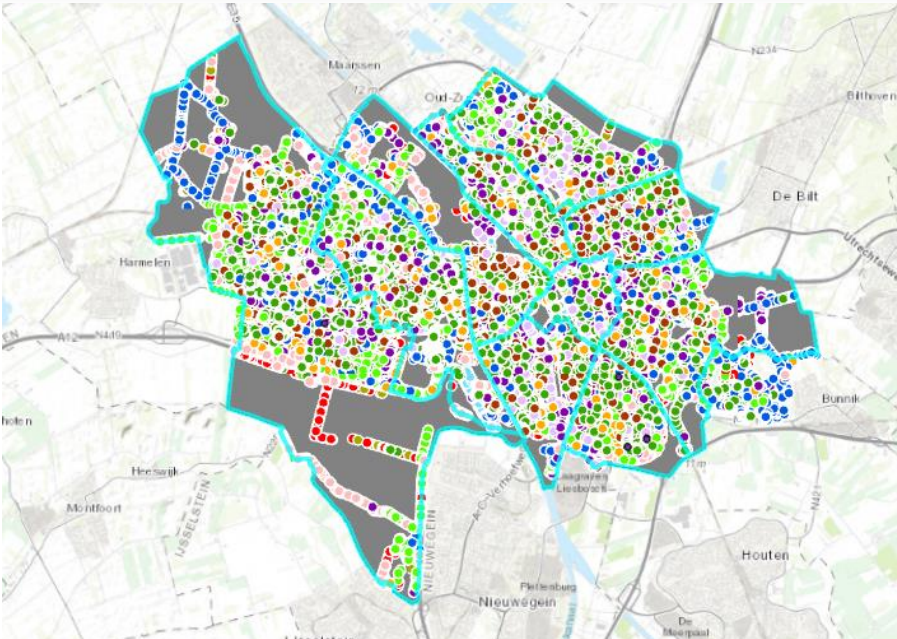
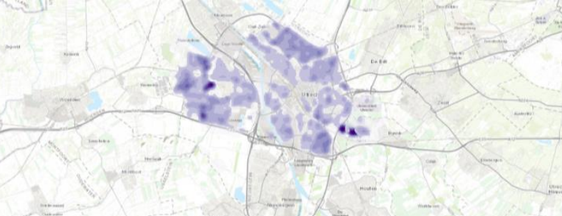
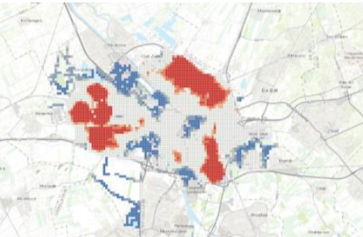

Vector Maps
Description of map
The aim of creating a vector map using the tree data from Utrecht is to visually represent and analyze the spatial distribution of trees in the area. By mapping out the locations of different tree types, researchers and planners can identify patterns, trends, and concentrations of specific tree species. This information can be valuable for various purposes such as urban planning, environmental management, biodiversity conservation, and assessing the impact of trees on the local ecosystem. Additionally, the vector map can help stakeholders make informed decisions regarding tree planting, maintenance, and preservation efforts in Utrecht.
How was it made?
To create a vector map in ArcGIS Pro, I added tree data from Utrecht using ArcGIS Online, then filtered and created a new layer to display specific types of trees. After setting the project's units of measure and customizing symbology for clarity, I conducted spatial analysis to identify trends in tree distribution. This involved creating maps like Choropleth and Kernel Density maps to visualize tree densities and patterns across the area, providing insights useful for urban planning and environmental management decisions.
Map Using Count Attribute
Where each count represent one tree
Kernel Density Map
A kernel density map visualizes spatial distribution by smoothing point data into continuous surfaces, showing areas of higher and lower density based on a chosen kernel function and bandwidth.
Hot Spot Analysis
By identifying statistically significant clusters of high and low values within a dataset, a hot spot analysis helps to identify areas of concentrated activity or anomalies in spatial patterns.
Skills Acquired
I learned to source and integrate geographic data from ArcGIS Online, manage data by filtering and selecting specific tree types, and customize symbology for clear visualization. Engaging in spatial analysis techniques like Choropleth and Kernel Density mapping provided insights into tree distribution patterns.